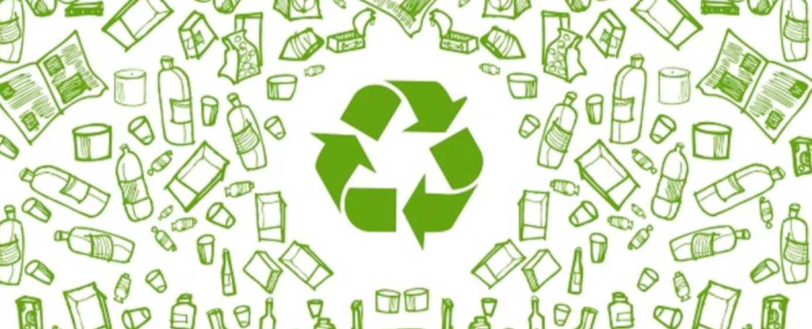

Comunidade Parque Europa 3. Bem-vindo(a)!
Aqui você encontra informações sobre como separar corretamente cada tipo de resíduo.
A campanha de conscientização foi desenvolvida com base nas demandas da comunidade do Conjunto Habitacional
Parque Europa 3, localizada na região de Guarapiranga. Nosso objetivo é sensibilizar moradores de todas as
idades sobre a importância do descarte correto de resíduos e estimular práticas sustentáveis cotidianas.
Por que é importante reciclar?
Segundo a Abrelpe – Associação Brasileira de Empresas de Limpeza Pública e Resíduos Especiais, cerca de 80
milhões de toneladas de
lixo são geradas por ano no Brasil, mas somente 4% são recicladas. Outro fator importante é o fato de que
não são todos os municípios
brasileiros que contam com a coleta seletiva de lixo, o número fica em cerca de 70%. Esse lixo é
constantemente descartado no meio
ambiente, contaminando o solo e lençóis freáticos, aumentando o aquecimento global. Além de gerar o
desperdício de energia e água.
A reciclagem é um processo mais consciente de reaproveitamento de produtos que podem ser utilizados de
diferentes maneiras, isso é
importante quando levado em consideração o tempo de decomposição de alguns materiais. O vidro, por exemplo,
demora mais de 1000
anos para desaparecer completamente do meio ambiente.
Além disso, a reciclagem gera renda para milhares de brasileiros, que dependem da coleta para a
sobrevivência. Ainda de acordo com a
Abrelpe, o Brasil perde R$14 bilhões por ano por não reciclar adequadamente. Ou seja, trata-se de um
processo importante para o meio
ambiente, saúde humana e economia do país.
Como fazer o descarte correto dos lixos?
Segundo o CONAMA – Conselho Nacional do Meio Ambiente, existem dez tipos de lixeiras disponíveis para uma
coleta seletiva eficiente,
representadas por diferentes cores:
- Papel:
Reciclável: Papel de fax, Jornais e Revistas, Envelopes, Listas Telefônicas, Rascunhos, Papel
Sulfite/Rascunho, Cartazes Velhos,
Papel de Fax, Folhas de Caderno, Fotocópias, Embalagens longa vida tipo Tetrapak, Formulários de Computador,
Caixa de Pizza,
Caixas em Geral (ondulado), Cartolinas e papel cartão, Aparas de Papel, Não reciclável: Papéis
Plastificados, Papéis Sanitários
(papel higiênico), Etiquetas adesivas, Papéis engordurados, Papel carbono, Papéis Parafinados, Fotografias,
Papel celofane, Bitucas
de Cigarros, Guardanapos.
Saiba mais sobre papel
- Vidro:
Reciclável: Embalagens, Copos, Vidros especiais como tampa de forno micro-ondas, Frascos de remédio vazio,
Potes de conserva,
Cacos, Garrafas. Não reciclável: Óculos, Lâmpadas, Espelhos, Louças, Ampolas de remédios, Boxes Temperados,
Pirex, Cerâmicas,
Para-brisa de carros, Porcelanas, Tubos de TV e monitores.
Saiba mais sobre vidro
- Plástico:
Reciclável: Garrafas, Copos, Embalagens Pet (Refrigerantes, Vinagre, Óleo…), Sacos/Sacolas, Tampas, Frascos
de produtos,
Caneta (Sem a tinta), Canos e Tubos de PVC, Embalagens de produto de limpeza, Embalagens tipo Tupperware,
Brinquedos de plástico,
Baldes. Não reciclável: Espuma, Esponja de cozinha, Tomadas, Acrílico, Bandejas de plástico, Embalagem
Metalizada (Café e Salgadinho),
Cabos de Panela, Isopor. O isopor pode sim ser reciclado, mas como a tecnologia necessária nesse processo é
cara no Brasil, ele está
lista de materiais não recicláveis.
Saiba mais sobre plástico
- Metal:
Reciclável: Enlatados, Tampinhas de Garrafas, Chapas, Latas, Ferragens, Arames, Talheres de metal, Panelas
sem cabo, Papel
alumínio limpo, Canos, Pregos, Aerossóis, Cobre, Embalagem de marmitex. Não reciclável: Clipes, Tachinhas,
Latas de inseticidas, Grampos,
Latas de solventes Químicos, Esponja de Aço, Latas de Verniz.
De acordo com o conceito de reciclagem,
Saiba mais sobre metal
- Lixo Orgânico:
Reciclável (compostável): Cascas de frutas e legumes, restos de comida (exceto carnes e laticínios), borra
de café, saquinhos
de chá, cascas de ovos, folhas secas, papel toalha usado (sem gordura), guardanapos limpos, restos de
vegetais, sementes, palha, serragem
limpa, podas de plantas. Esses resíduos podem ser utilizados para compostagem, transformando-se em adubo
natural.Não compostável: Carnes
cruas ou cozidas, ossos, peixes, restos de alimentos muito gordurosos, laticínios (como queijo e leite),
alimentos estragados com mofo, fezes
de animais, fraldas, absorventes e materiais orgânicos contaminados com produtos químicos.
Saiba mais sobre lixo ôrganico